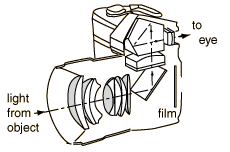

| The single-lens reflex 35 mm camera is the choice of many serious amateur as well as professional photographers because the light from the object reflects from a mirror and is taken through the eyepiece to the eye of the photographer, in contrast to a viewfinder camera where the photographer is looking through a separate lens at the subject. The advantage of the SLR is that the eye sees approximately what the film will record, so that you can freely interchange lenses, use close-up lenses, etc. and still see what you will record on the film. Viewfinder cameras are practically limited to one lens, because the viewfinder must approximate what will be filmed.
|

Light is bounced from a mirror through a pentaprism to the viewer's eye while choosing the object for photography. The shutter button lifts the viewing mirror while opening the shutter to allow the light to fall on the film.
|